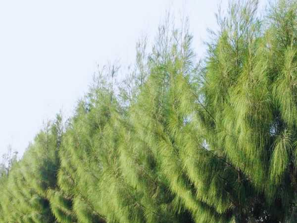

Casuarina equisetifolia
Common Names: Casuarina, Ironwood, She-oak, Horsetail Tree, Beach Casuarina
Local Name: Savukku (Tamil), Jangli Saru (Hindi), Kattadi (Malayalam)
Family: Casuarinaceae
Origin: Australia, Southeast Asia, Pacific Islands
Plant Type: Fast-growing evergreen tree
Average Lifespan: 40–100 years
| Growth Habit | Tall, erect, fast-growing tree with drooping branchlets resembling pine needles |
| Plant Size | 15–35 meters tall; trunk diameter 30–60 cm |
| Leaves | Reduced to tiny scales; photosynthesis performed by green, jointed branchlets (cladodes) |
| Flowers | Tiny, inconspicuous; male flowers in terminal spikes, female flowers in small cones |
| Fruit | Small woody cone-like structures (samaras) containing winged seeds |
| Root System | Deep taproot with nitrogen-fixing root nodules (Frankia bacteria); excellent for soil stabilization |
| Climate | Tropical to subtropical; highly drought and salt tolerant |
| Temperature Range | 10–45°C; extremely hardy |
| Rainfall Requirement | 500–2000 mm annually; tolerates drought once established |
| Soil Type | Sandy, coastal, or poor soils; highly adaptable; tolerates saline soils |
| Soil pH Preference | 5.0–8.0; very adaptable |
| Sun Requirement | Full sun; very light-demanding |
| Spacing | 2–3 meters for timber plantations; 1 meter for windbreaks |
| Irrigation Method | Minimal once established; drought-tolerant |
| Water Requirement | Low; very drought-tolerant after establishment |
| Fertilizer Schedule | Minimal; nitrogen-fixing root nodules reduce fertilizer needs |
| Recommended Organic Fertilizers | Compost at planting; phosphorus supplement for establishment |
| Mulching Practice | Mulch young trees; fallen branchlets form natural mulch layer |
| Pruning Time | Early years to establish straight trunk; minimal pruning needed |
| How to Prune | Remove lower branches for clear timber bole; prune for windbreak shape as needed |
| Common Pests | Bark borers, termites, defoliating caterpillars |
| Common Diseases | Root rot in waterlogged soils; generally disease-resistant |
| Disease Prevention & Remedies | Ensure good drainage; avoid planting in waterlogged areas |
| Propagation by Seeds | Seeds germinate readily in 1–2 weeks; sow fresh seeds in nursery beds |
| Propagation by Cuttings | Hardwood cuttings possible; rooting hormone improves success |
| Water Usage | Very low; ideal for dryland and coastal afforestation |
| Soil Conservation Practices | Excellent for coastal sand dune stabilization and erosion control |
| Organic Practices Used | Nitrogen fixation improves soil fertility; fallen branchlets add organic matter |
| Biodiversity Benefits | Provides windbreak and shelter; seeds eaten by birds; coastal habitat protection |
| Commercial Production Regions | Tamil Nadu, Andhra Pradesh, Odisha (India); China, Vietnam, Egypt, Brazil |
| Market Uses | Firewood, charcoal, pulpwood, poles, construction timber, windbreaks |
| Processing Uses | Paper pulp, tannin extraction from bark, charcoal production |
| Market Value (Approx.) | ₹3,000–6,000 per tonne as firewood; higher for poles and timber |
| Symbolism | Widely planted along Tamil Nadu coastline as a windbreak and tsunami barrier; symbol of coastal resilience |
| Traditional Uses | Bark used in traditional medicine for diarrhea and dysentery; wood used for fuel and construction in coastal villages |
Add your field observations here.